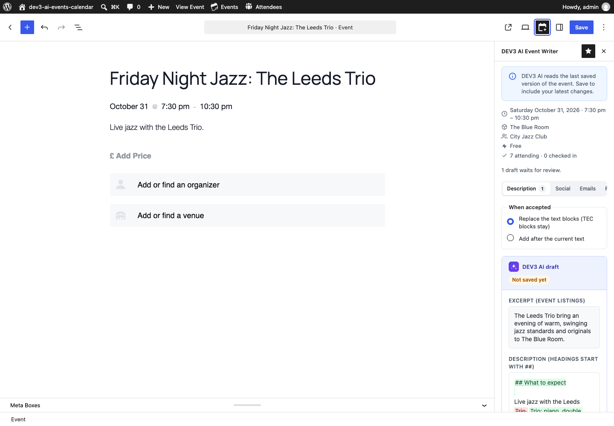
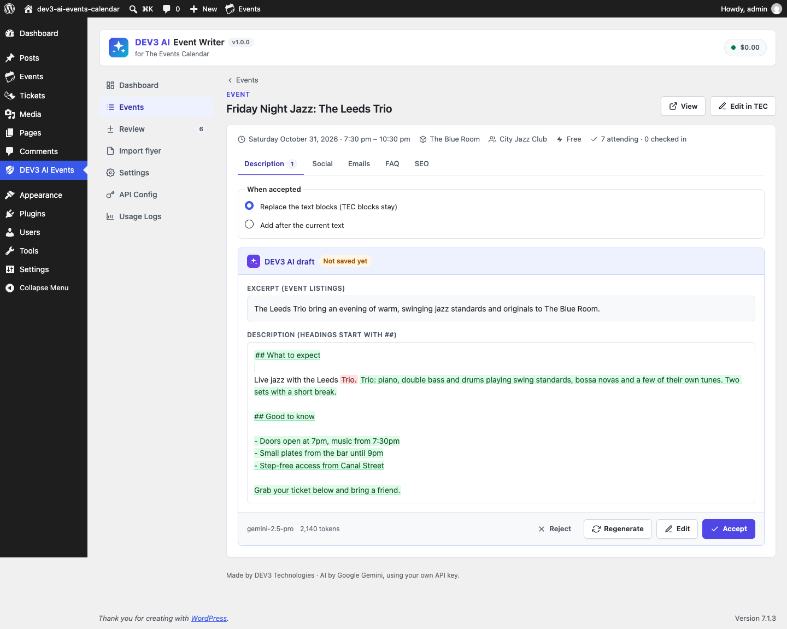
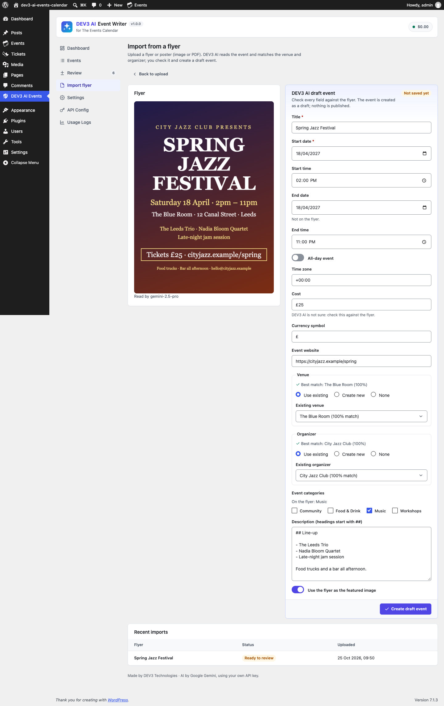
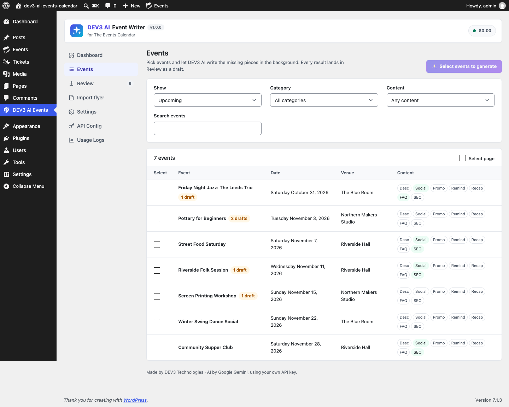

Installation
- Install and activate The Events Calendar (free, required). Event Tickets (free) is optional and adds attendance numbers and attendee emails.
- In WordPress go to Plugins > Add New > Upload Plugin, choose
dev3-ai-events-calendar.zip, install and activate. - Open DEV3 AI Events in the admin menu (also linked under Events > DEV3 AI Writer).
Requirements: WordPress 6.0+ (The Events Calendar itself may need a newer version), PHP 7.4+ (tested on 8.3). No licence key or account is needed.
Google Gemini API key
- Go to Google AI Studio and create an API key.
- In DEV3 AI Events > API Config, paste the key and click Validate. The key is stored encrypted and never sent to the browser.
- Optional: set a monthly budget (AI pauses when it is reached), pick the models (default
gemini-2.5-flash; descriptions and flyer reading usegemini-2.5-pro), and switch on PII masking.
You can also define the key in wp-config.php: define( 'DEV3EC_GEMINI_API_KEY', '…' );
Without a key everything except the AI buttons works: templates, manual editing, emails, FAQ output, SEO meta and manual flyer entry.
In the event editor
Block editor (TEC setting Activate Block Editor for Events): click the DEV3 AI Event Writer icon in the top bar. Classic editor: the DEV3 AI Event Writer box sits below the editor. Both show the same tabs: Description, Social, Emails, FAQ and SEO.
Each tab has notes and options (tone, language, length, audience, networks, number of questions, focus phrase), Generate with DEV3 AI and Use template. The result is a draft: Changes shows a word diff against the current text; you can Edit, Regenerate, Reject or Accept.
DEV3 AI reads the last saved version of the event (date, time zone, venue, organizers, cost, categories, ticket types). Save the event first after changing them.


Event descriptions
DEV3 AI writes an excerpt and 2-5 sections (headings, paragraphs and lists) plus a call to action, using only the event's facts and your notes. On accept:
- Block editor: native
core/heading,core/paragraphandcore/listblocks are inserted. Replace removes the old text blocks and keeps TEC blocks, images and embeds; Add after keeps the old text. The excerpt is filled. Click Update to save. - Classic editor: HTML goes into the editor (visual or text tab) and the excerpt box.
- Admin app / Review queue: the event is updated directly.
In the text editor of a draft, lines starting with ## are headings and lines starting with - are list items.
Social posts
One post per network, fitted to the network's limit. Counters follow each network's rules:
| Network | Limit | Notes |
|---|---|---|
| X | 280 | Every link counts as 23 characters |
| Bluesky | 300 | |
| Threads | 500 | |
| Mastodon | 500 | Links count as 23 characters |
| 2,200 | Links are not clickable: “link in bio” | |
| 3,000 | ||
| 2,000 (DEV3 limit) | Ideal under 500 |
Saved posts can be edited by hand, copied, or opened in the network's share dialog. DEV3 does not post automatically.
Promo, reminder and recap emails
Each email has a subject, preheader and body. Merge tags: {attendee_name}, {event_title}, {event_date}, {event_time}, {venue}, {event_url}, {site_name}.
- Send me a test sends the current (even unsaved) email to your account address.
- Send to attendees (administrators, Event Tickets) sends one email per unique attendee address in the background and logs it.
- Automatic reminder (Settings): the saved reminder goes out once per event, N hours before it starts.
- The recap uses Event Tickets counts (registered, checked in, per ticket). Only counts are sent to the AI, never names or emails.
The promo email is meant for your newsletter tool: copy it, or send yourself a test to forward.
FAQ
3-10 questions answered from the event's facts (otherwise “contact the organiser”). Saved FAQs show below the event description (setting), in the Event FAQ block, or with [dev3ec_faq id="123" heading="Questions"], with FAQPage JSON-LD. In the block editor, Insert as blocks adds core/details blocks instead.
Style it with CSS custom properties on .dev3ec-faq: --dev3ec-faq-line, --dev3ec-faq-tint, --dev3ec-faq-radius, --dev3ec-faq-gap, --dev3ec-faq-title-size.
SEO meta
SEO title (ideal 30-60 characters) and meta description (110-155) with a search preview. Values are written into Yoast SEO (_yoast_wpseo_title, _yoast_wpseo_metadesc) or Rank Math (rank_math_title, rank_math_description) when active, and their editor fields are kept in sync so a later Update does not overwrite them. Without an SEO plugin DEV3 prints the title, meta description and Open Graph tags (can be switched off).
Import an event from a flyer
- DEV3 AI Events > Import flyer: drop a JPG, PNG, WebP or PDF (15 MB max) and add notes (e.g. “the year is 2027”).
- Read with DEV3 AI runs in the background. Or choose Fill in by hand.
- Review every field beside the flyer. Fields DEV3 AI was unsure about, or that are not on the flyer, are marked.
- Venue and organizer: Use existing (matched by name, city, address, email or website, with a match score), Create new or None. Categories are matched to your event categories.
- Create draft event creates a draft event through TEC's own API, with the flyer as featured image (optional).

Bulk generation and the review queue
Events lists TEC events (upcoming, past, all; category; missing content). Select events, click Generate, pick outputs, tone, language and notes, and whether to fill only what is missing. It runs as a background job (progress, cancel, retry). The same is available from the TEC events list: row link Write with DEV3 AI and bulk action Generate with DEV3 AI.
Review lists every draft. Open one to see the diff, edit and accept or reject; or select several and accept/reject them at once. If the event changed after the draft was written, DEV3 asks before accepting.

Settings
| Setting | What it does |
|---|---|
| Default tone / language | Used by every writer unless changed per request. |
| Brand hashtags, default networks | Social defaults. |
| Show the FAQ | Below the description, or only via block/shortcode. FAQ schema on/off. |
| SEO meta output | Print meta tags when no SEO plugin is active, or never. |
| From name, reply-to | Email headers. |
| Automatic reminder, hours before | Sends the saved reminder once per event. |
| Imported events are saved as | Draft or Pending review; featured image default. |
| Delete data on uninstall | Drops DEV3 tables, options and saved outputs. Events stay. |
Hooks for developers
| Hook | Type | Use |
|---|---|---|
dev3ec_attendees( $rows, $event_id ) | filter | Attendee rows (Event Tickets format) from other ticket plugins. |
dev3ec_seo_adapter( $id ) | filter | Force yoast, rankmath or native. |
dev3ec_seo_written( $id, $vals, $adapter ) | action | After SEO meta was written. |
dev3ec_draft_accepted( $draft, $saved, $mode ) | action | After a draft was accepted. |
dev3ec_email_html( $html, $subject, $body ) | filter | Replace the email template. |
dev3ec_prompt_<id>( $prompt ) | filter | Change a prompt: event_description, social_posts, event_email, recap_email, event_faq, event_seo, flyer_import. |
dev3ec_ai_guard, dev3ec_model_prices, dev3ec_capability, dev3ec_manage_capability | filter | Shared DEV3 core: block AI calls, prices, capabilities. |
REST namespace dev3ec/v1: status, events, events/<id>, events/<id>/generate|template|assets|send, bulk, drafts, drafts/<id>/accept|reject, drafts/bulk, imports, imports/<id>/create, places. All need a logged-in user, a REST nonce and edit_post on the event.
FAQ
Does DEV3 change my events on its own?
No. Nothing is saved until you accept a draft; imports create draft events.
What is sent to Google?
The event's facts (title, dates, venue, organizers, cost, categories, ticket types, current description) and your notes. Attendee names and emails are never sent.
The recap says nothing about attendance.
Install Event Tickets; with attendees, counts are included.
I use Events Calendar Pro recurring events.
DEV3 writes for the event post; recurring instances share it.
Emails do not arrive.
Use Send me a test and check your site's mail setup (an SMTP plugin is recommended).
Changelog
1.0.0: Initial release.